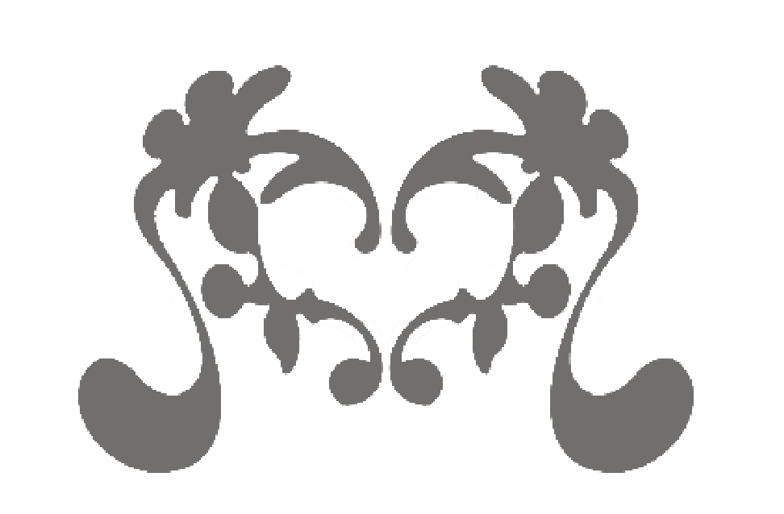
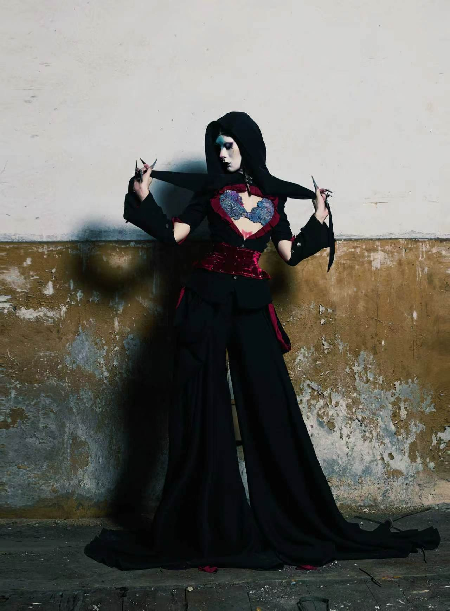
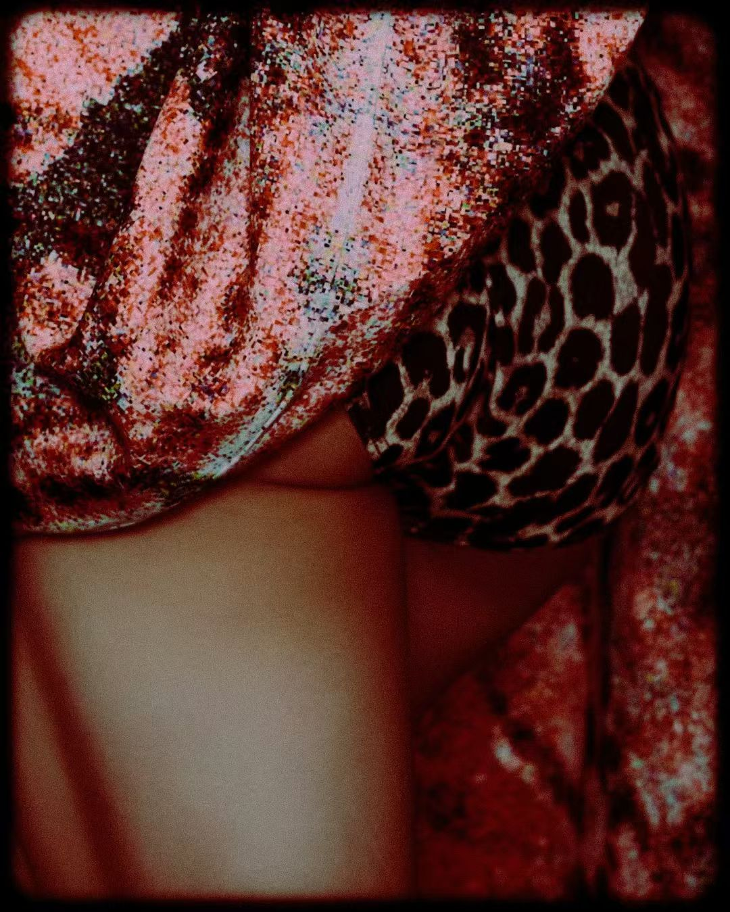
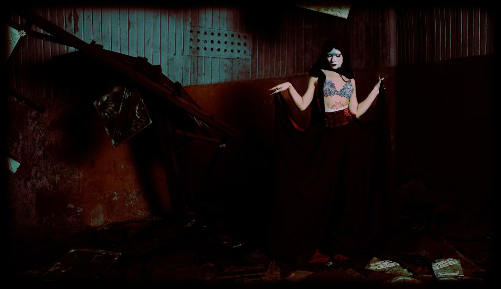
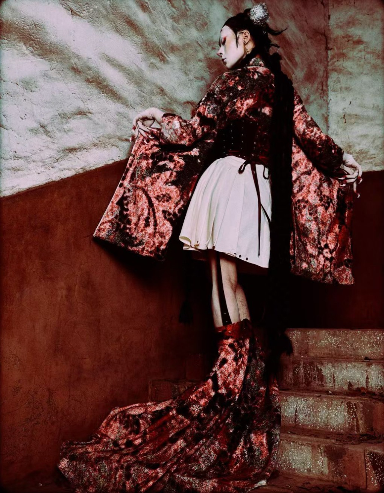
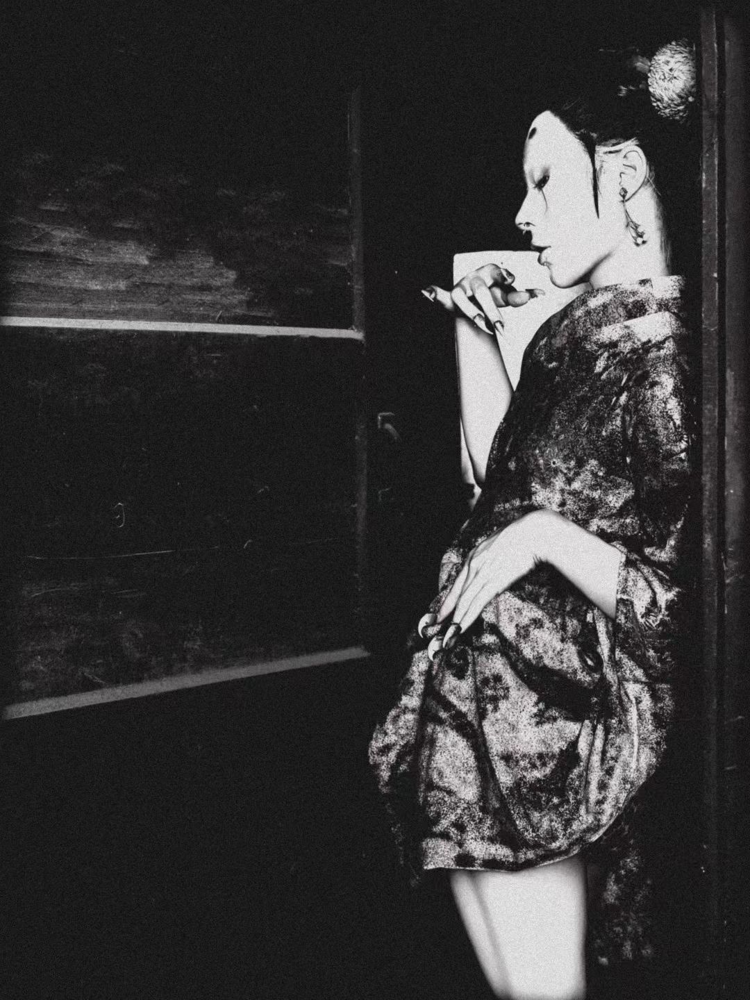
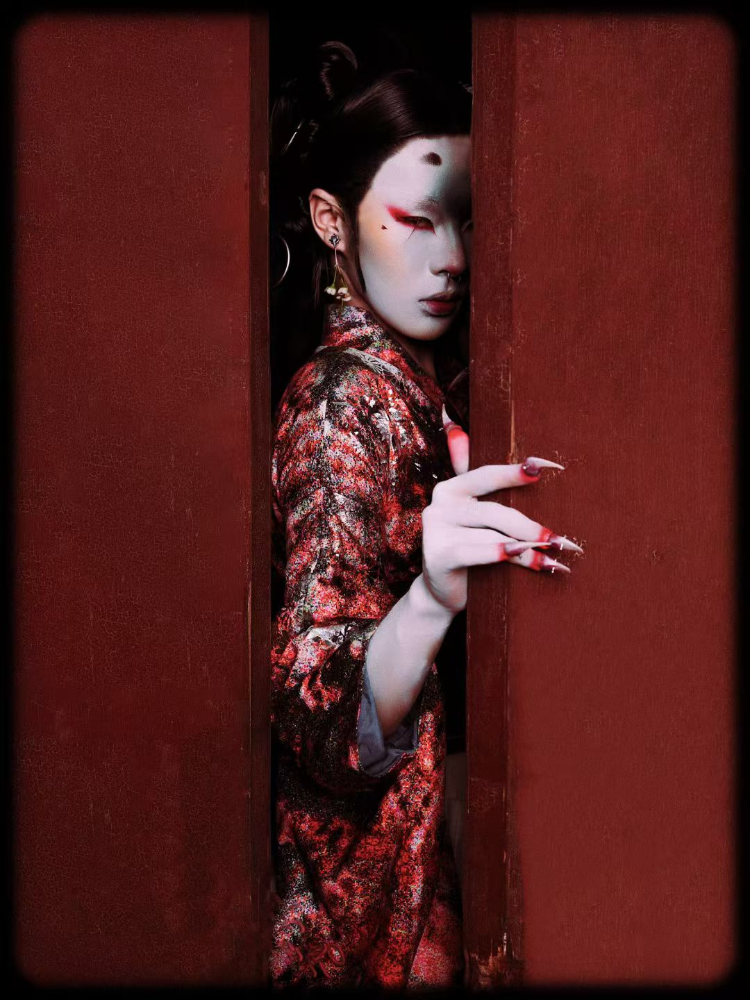

02 / FASHION DESIGN 时装设计
STAY
留在舞台
STAY

N
STAGE
留在舞台
Performance as a space for transformation.将表演视为身体与身份转化的空间。
PROJECT STATEMENT 项目陈述
“BETWEEN STRUCTURE AND SOFTNESS, CONCEALMENT AND EXPOSURE.”“在结构与柔软、隐藏与显露之间。”
Stay On Stage explores performance, gender expression and body transformation through a womenswear collection combining structured tailoring, corsetry, draping and layered surfaces.《Stay On Stage》通过结构化剪裁、束身结构、立体垂褶与层叠表面，探索表演、性别表达与身体转化。
Drawing from drag culture and Japanese cinematic references, the project develops a visual language based on contrast: masculine structure meets feminine softness, while concealment and exposure continually exchange roles.项目从变装文化与日本电影意象中汲取灵感，以对比建立视觉语言：男性化结构与女性化柔软相遇，遮蔽与显露不断交换角色。
CONCEPT
THE WORLD BEFORE THE CURTAIN RISES.幕布升起前的世界。


IDENTITY & MATERIAL
THE CHARACTER TAKES FORM.角色逐渐成形。

CONSTRUCTION
STRUCTURE MEETS PERFORMANCE.结构与表演相遇。

ACT IV / 第四幕
CHARACTERS
NINE CHARACTERS WAITING TO ENTER THE STAGE.九个等待登场的角色。

EDITORIAL OUTCOMES 视觉呈现









